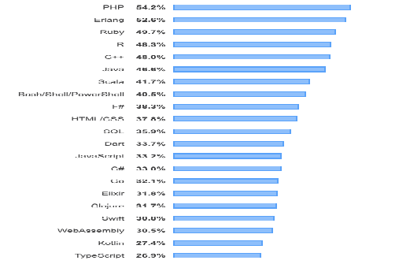

classification
links:
Programming languages classification
Programming languages are classified into several categories.
This category includes 25 sub-categories, out of 25. Of them, according to the most common, including the most procedural and static
The most popular programming languages in the technology world
1- Python
2- Java:
3- C and C++
Advantages of C and C++:
4- JavaScript
5- Go
6- Ar
7- Swift
